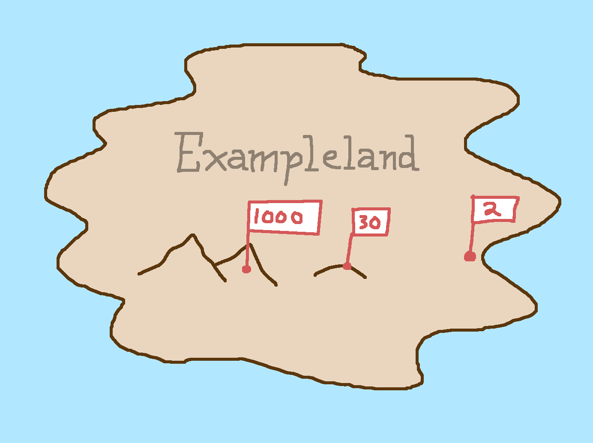
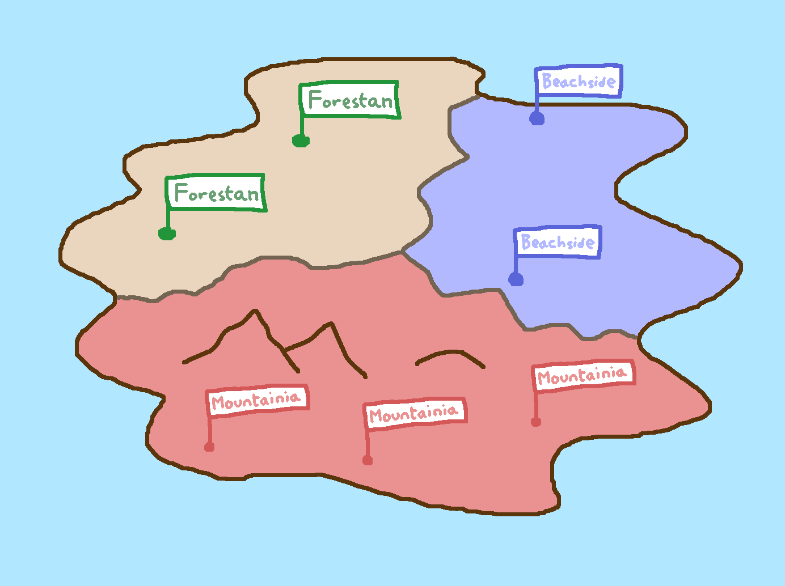
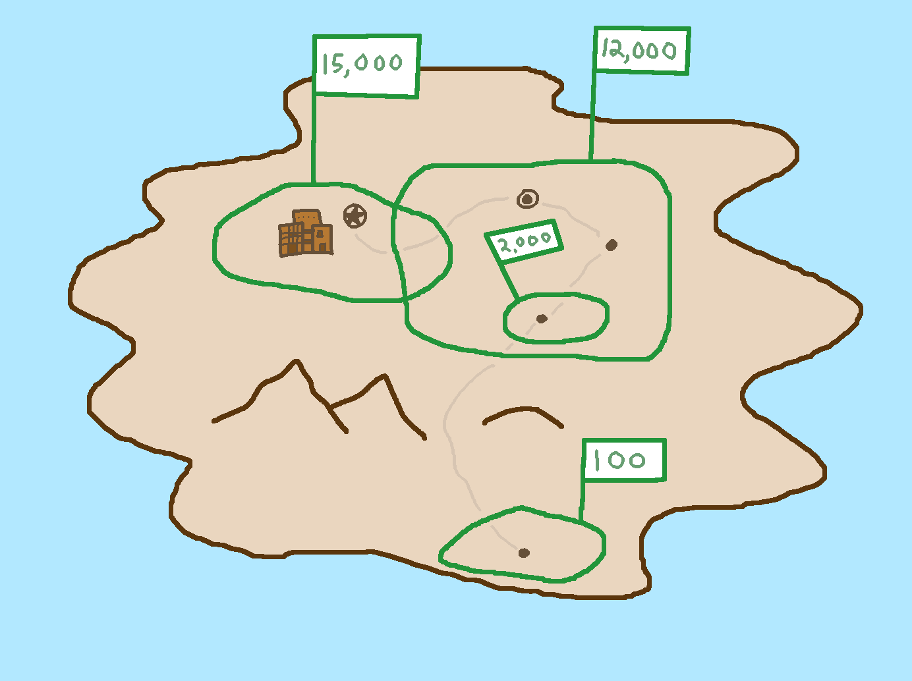
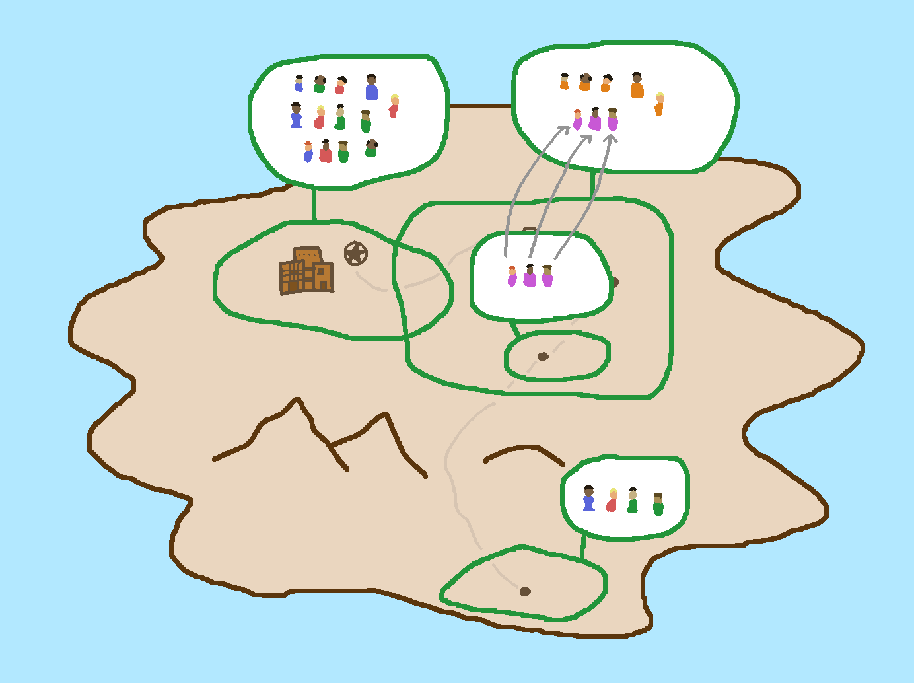
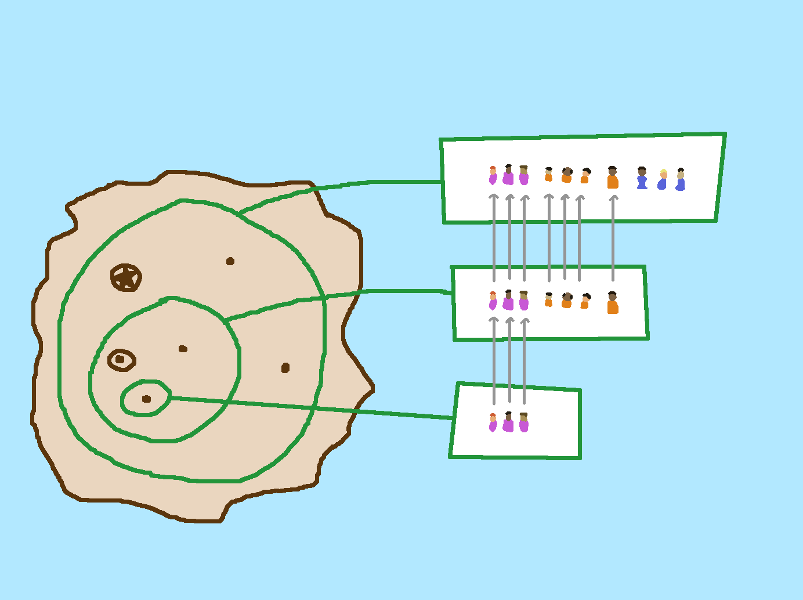
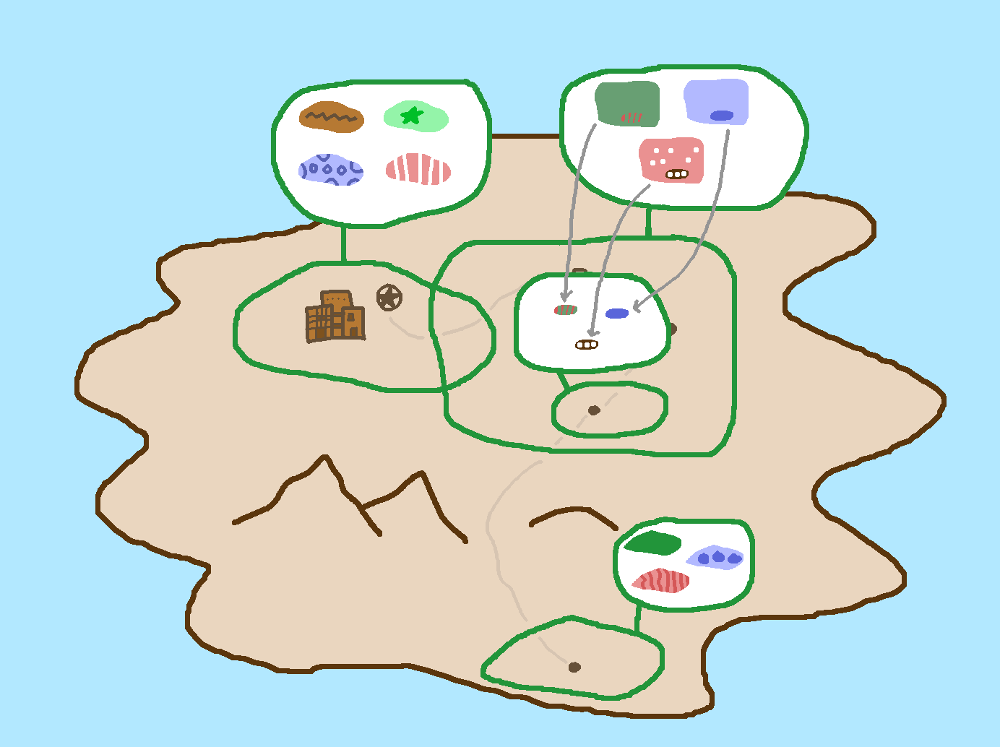
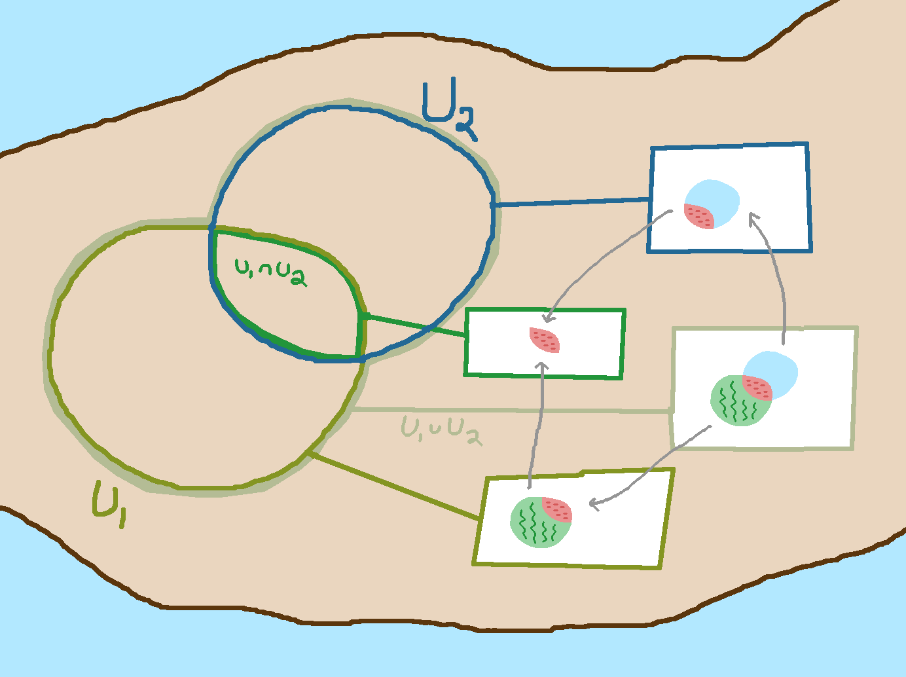

A Picture of Sheaves
This is a short expository note on the definition of sheaves.
The intended audience is people who have heard of sheaves, and were perhaps put off by the definition,
and wish they had some more examples or pictures or intuition.
Functions on the Points of a Space
You're a cartographer; you're interested in various statistics, measurements, and observations
of the country you live in. Each one answers a question. Each has a type.
For example, the answer to the question what is the altitude above sea level here, measured in meters?

is a function from points in space to numbers. We could write
\[\mathbf{Altitude} : X \to \R\]
where $X$ is the type of points of space.
The question which province does this location belong to?

is answered by a function from points in space to the type of provinces,
which is the three-element type
$\mathsf{Province} = \{\mathsf{Forestan}, \mathsf{Mountainia}, \mathsf{Beachside}\}$.
We could write
\[\mathbf{WhichProvince} : X \to \mathsf{Province}\]
Functions on the Subsets of a Space
Other questions of interest are answered by a function where the input type is subsets of a space.
For example, the answer to the question what is the population of this region? is
a function from subsets of space to numbers.

We could write
\[\mathbf{Population} : \ps(X) \to \N\]
where $\mathcal{P(X)}$ is the powerset of X.
Notice that this function is not just any function from the collection of
subsets of $X$ to numbers, but one with a special property: if we have two subsets $U, V$,
with $U \subseteq V$, then surely $\mathbf{Population}(U) \le \mathbf{Population}(V)$.
Functions to Sets
Instead of merely counting the population of a region, we could also ask for the actual set of people
that live there.
The question who are the people living in this region? is answered
by a function from subsets of space to the type of sets.
\[\mathbf{Inhabitants} : \ps(X) \to \rset\]
There is again a special property that $\mathbf{Inhabitants}$ has, compared to other
functions in $\ps(X) \to \rset$. For any subsets $U, V \in \ps(X)$ where $U \subseteq V$, there exists
a function $\mathbf{Inhabitants}_{V \supseteq U} : \mathbf{Inhabitants}(U) \to \mathbf{Inhabitants}(V)$.

In fact, these functions satisfy some additional special properties. For any $U, V, W \in \ps(X)$ with
$U \subseteq V \subseteq W$,
then
\[\mathbf{Inhabitants}_{U\supseteq U} = \rid\]
\[\mathbf{Inhabitants}_{W\supseteq V} \o \mathbf{Inhabitants}_{V\supseteq U} = \mathbf{Inhabitants}_{W\supseteq U}\]

Functions to Sets, but Backwards
The National Art Fund comes to you and asks for a report on the
feasibility of an art project on a grand scale. The artist
proposes to paint a design on a huge swath of countryside. You
consider the possibilities. The answer to the question how could this region be painted?
is, like $\mathbf{Inhabitants}$, also a function from the subsets of space
to the type of sets.

\[\mathbf{Paintings} : \ps(X) \to \rset\]
It produces the set of all possible paintings that cover a region. For this question, the special property
relating subsets of space to functions goes in the opposite direction. If we have two
subsets $U \subseteq V$, then there is a function
\[\mathbf{Paintings}_{U \subseteq V} : \mathbf{Paintings}(V) \to \mathbf{Paintings}(U)\]
that goes from set of paintings on the bigger subset to
the set of paintings on the smaller set. That is, if we
have made a decision about how to paint a bigger set, then we have
also committed to what the painting will look like on the smaller
set.
There is a similar set of composition properties
\[\mathbf{Paintings}_{U\subseteq U} = \rid\]
\[\mathbf{Paintings}_{U\subseteq V} \o \mathbf{Paintings}_{V\subseteq W} = \mathbf{Paintings}_{U\subseteq W}\]
and moreover a property that holds about patching-together of ways of painting on smaller sets.
Informally:
If we have decided how to paint a bunch of sets, and none of those decisions conflict, then we know
how to paint their union.
More formally, suppose we have a collection of sets $(U_i)_{i\in I}$, and we've made a decision
for how to paint them by selecting $p_i \in \mathbf{Paintings}(U_i)$. Now it might be that some of the
$U_i$ overlap, in which case our plan had better not involve
commitments to painting the overlaps in different ways!
So if it is the case that for all $i, j \in I$ we have
\[\mathbf{Paintings}_{U_i\cap U_j\subseteq U_i}(p_i) = \mathbf{Paintings}_{U_i\cap U_j\subseteq U_j}(p_j)\]
then there exists a uniqe $p \in \mathbf{Paintings}_{\bigcup_j U_j}$ such that for all $i$ we have
\[\mathbf{Paintings}_{U_i \subseteq \bigcup_j U_j}(p) = p_i\]

What is a Sheaf?
A sheaf is a question that behaves like the question
how could this region be painted?.
It is a map that takes a subset of a space, and yields a set of elements that live "over" that subset.
It is required to have the property that you can map the set of elements over a bigger subset to the
set of elements over a smaller subset, in a "coherent" way. It is also required to have the property
that if you have a colleciton of elements that live over a collection of subsets, which are "consistent"
with one another, then there is a unique element over the union of those the subsets which is the
"patching together" of all those elements.